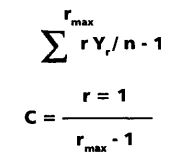
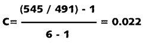

Ареография
Перевод с испанского: https://www.academia.edu/39049358/Rapoport_Monjeau_Areograf%C3%ADa_PDF
Ареография — это изучение формы, размеров и пространственного распределения ареалов, населенных видами и другими таксонами низшей иерархии (подвиды) или высшей (роды, семейства и другие надвидовые группы). Некоторые авторы использовали термин хорология (от греческого chóros место, регион) как синоним ареографии, последний введен Каином (Cain, 1944). Картографирование ареала вида в макрогеографическом масштабе относительно просто, но могут быть допущены серьезные ошибки, если границы его ареала невозможно провести достаточно детально. По мере более тщательного изучения распространения видов обычно обнаруживается, что популяции не распространяются непрерывно, а присутствуют на отдельных участках. Это настоящие «острова», разделенные большими пустыми или полупустыми участками. Есть места с различной плотностью особей — от очень высокой до очень низкой, что затрудняет любые попытки точно разграничить их ареал. В нескольких смыслах области распределения показаны в виде фракталов: на микроуровне повторяются некоторые особенности, наблюдаемые на макроуровне.
Как разграничить ареалы
В процессе определения границ ареала мы сталкиваемся с несколькими видами неопределенности:
(1) В макрогеографическом масштабе пространственное расположение особей не может быть подробно отображено на карте.
(2) Ареал видов постоянно меняется (Роббинс и Ван Велзен - Robbins y Van Velzen, 1986).
(3) Таксономическая классификация часто изменяется.
(4) Для разграничения географической области могут использоваться разные критерии, с помощью которых каждый автор может создавать разные карты на основе одних и тех же данных.
Пункт (1) можно считать проблемой масштаба, и он не имеет практического решения, поскольку граница ареала вида, в пределах которого, как мы предполагаем, обитают особи, является картографической абстракцией, а не реальным объектом.
Пункт (2) можно понимать как фотографический снимок динамического процесса. В зависимости от скорости процесса изменения в географическом районе, он имеет разный срок полезного использования или срок действия и может варьироваться, например, от одного года (в случае некоторых видов тлей) до столетия (в случае деревьев) (Рапопорт, 1982).
Пункт (3) является неизбежным источником «шума», основной причиной рассмотрения географической области в качестве гипотезы распределения, которую можно проверить и изменить по мере развития наших знаний (Monjeau, 1989).
Чтобы проверка была возможна, методология проектирования географической области должна быть воспроизводимой, и это приводит нас к проблеме, поставленной в (4). Учитывая, что значительная часть биогеографических гипотез основывает свою непротиворечивость на географическом ареале вида, важно требование проверяемости. По этой причине в этой главе мы подробно анализируем различные методы разграничения и уплотнения географической области.
Чтобы установить ареал вида, биогеограф обычно накапливает определённое количество точек на карте и визуально рассматривает его границы. Каждая точка соответствует записи или месту, где он или другие авторы подтвердили присутствие этого вида. Проблема в том, что от критериев биогеографа зависит, будет ли окончательный рисунок компактной (непрерывной) или фрагментированной территорией. На основании одних и тех же данных никакие два биогеографа не сойдутся в своих цифрах (рис. 1).
Методы, используемые экологами для определения «индивидуального участка» (домашней среды или жизненного пространства) животных, также бесполезны для биогеографа. И минимальный круг, и минимальный выпуклый многоугольник (рис. 2) не допускают существования «полуостровов» и «заливов». Его жесткость отдаляет от реальности то, что эвристически понимается как неравномерность географического ареала вида.
Вот уже несколько десятилетий британские авторы используют более последовательный и практичный метод: Милля. Это четырехугольная сетка, впервые использованная для графства Беркшир: Bowen (1968) сетка 5 x 5 км; Позже Перринг и Уолтерс (1976) увеличили его до 10 x 10 км для всех Британских островов и Ирландии. В Атласе европейской флоры его размер 50 х 50 км (Jalas, Suo minen, 1972). Другой критерий использовали Hnatiuk et al. (1982) при изучении распространения акаций в Австралии. У них сетка составляла 1° широты на 1,5° долготы. Но для детальных работ, таких как изучение пространственного распределения деревьев или трав, использовались сетки 1 х 1 км, 50 х 50 м и даже 5 х 5 м (Рапопорт, 1975, 1993).
Метод сетки объективен и прост, но у него есть свои проблемы. Во-первых, размер сетки является произвольным, и, следовательно, форма разграничиваемой географической области будет варьироваться в зависимости от выбранных размеров (рис. 3). Если сетка очень грубая, вполне вероятно, что вся или большая часть области будет занята выбранными видами. Если сетка очень мелкая, единственное, чего можно добиться, это заменить точки или отметки мест, соответствующих находкам, на квадратики. И проблема уплотнения остается нерешенной. Еще одна проблема с сетками — это местонахождения или находки на одном из краев ячейки или в углу. Это заставляет нас считать две или четыре ячейки соответственно занятыми видом. В любом случае, даже когда нет определенного критерия относительно размера сетки, метод доказал свою полезность при подготовке географических переписей.
Метод средней близости (MPM)
Метод основан на понятии расстояния до ближайшего соседа и на теории графов. Первый шаг — начертить дерево минимальных расстояний между точками или узлами, в которых подтверждено существование вида. После измерения расстояний находят среднее арифметическое (x) и с помощью компаса обходят всю компоновку дерева с обеих сторон, отмечая его края.
Узлы или подмножества узлов, разделенные более чем двумя способами (2 x), автоматически разделяются и составляют изолированные или непересекающиеся области (рис. 4). Метод средней близости (MPM) можно дополнить, добавив меру дисперсии, такую как дисперсия (s2), стандартное отклонение (s) или стандартная ошибка (SE). То есть, предполагая случайное, нормальное распределение мест записи типа, предложенного Уиттакером (1967) (рис. 4с), следует ожидать, что рисунок области, уплотненной s, ограничит область, где предвидится, что 68,3% будущих выводов.
Теоретически область, охватываемая тройками, должна включать 99,7% случаев. Однако источник данных зависит от распределения усилий по отбору проб, и, поскольку пространственное распределение мест отлова, наблюдения или сбора видов не обязательно является гауссовым, в реальных ландшафтах указанные выше значения являются лишь приблизительными.
Более подробно о MPM
Точно так же, как есть данные о наличии вида на данном участке, есть и данные о его отсутствии, хотя ценность данных об его отсутствии может скрывать проблемы с отбором проб. Есть виды, которые отмечаются только сезонно, изредка или в скрытых микрорайонах, которые трудно обнаружить; другими словами, сообщение об отлове вида, как правило, имеет большую ценность, чем сообщение об его отсутствии. Однако биолог нередко проверяет существование областей, где физически невозможно обитать рассматриваемому виду. Например, у прибрежных видов наличие территории, покрытой дюнами; для наземных видов наличие озера; с точки зрения видов, обитающих в долинах, наличие гор, а также ряд других ситуаций. Это, таким образом, области, которые должны быть стерты с карты распределения, которые стремятся разграничить. Аналогично, на основе интенсивных учетов иногда можно определить случаи сильной ассоциации или диссоциации между видами (растительными или животными) с определенным типом растительности, климата или ландшафта (Monjeau et 1998). При наличии достоверной исходной информации целесообразно уточнить разграничение МРМ географического ареала вида, стирая неисследованные участки, где его присутствие маловероятно, и, наоборот, включая участки с высокой вероятностью присутствия.
Monjeau (1989) нанес на карту наиболее вероятные районы обитания 12 видов мелких млекопитающих в западной Патагонии, основываясь на анализе соответствия между данными о присутствии-отсутствии каждого вида и типами местообитаний (рис. 5). После того как соответствие было установлено, были получены прогностические уровни, позволяющие предположить наличие или отсутствие данного вида в местах, где пробы не были отобраны, с помощью географической информационной системы (ГИС). MPM может быть полезен для ограничения географической широты нашей прогностической способности, поскольку она явно ослабевает по мере того, как мы удаляемся от исходного облака точек. Это также полезно в случаях, когда виды не имеют четкой связи с элементами ландшафта, как в случае с некоторыми плотоядными млекопитающими. На рис. 6 показан простейший пример: по пяти данным о присутствии вида сначала рисовалась площадь, соответствующая МРМ; затем, вкупе с данными об отсутствии в пяти разных местах, было построено новое дерево минимальных расстояний и достигнуто «соглашение»: области перекрытия между данными присутствия (черные кружки) и отсутствием (белые кружки), были разделены отрезками, равномерно распределяющими положительные и отрицательные области. Программа для выполнения расчетов перекрывающихся областей, их уплотнения и разграничения для сложных случаев, когда обрабатывается большое количество данных, была разработана Guasp et al. (1996) в лаборатории Ecotone Университета Комауэ.
Размер ареалов вида
Диапазон варьирования размера ареала вида чрезвычайно широк; он может варьироваться от площади менее одного гектара, как в случае лягушки Chall Huaco (Atelognathus nitoi), обитающей в небольшом горном озере недалеко от Барилоче в Аргентине, до большей части планеты, как в случае человека (Homo sapiens ) или некоторых широко распространенных бактерий. При первой попытке количественно определить размеры ареалов, занимаемых видами (Рапопорт, 1975, 1982), было подтверждено, что разные отряды млекопитающих Центральной и Северной Америки располагались следующим образом: плотоядные > парнокопытные > зайцеобразные > летучие мыши и т. д.. В среднем хищники (плотоядные) и крупные травоядные (парнокопытные) были среди тех, у кого были самые большие ареалы. При более детальном анализе семейств явление повторилось: медвежьи > псовые > цервидные > куньи > кошачьи > полорогие > проциониды и т. д. Среди летучих мышей хищные летучие мыши имели большую площадь ареалов, чем плодоядные и нектароядные. В Африке такая же тенденция была обнаружена среди млекопитающих, а также среди евразийских птиц. Другими словами, известный факт, что на индивидуальном уровне хищники имеют более широкий «индивидуальный участок», чем нехищники, будет повторяться на макрогеографическом уровне. Похоже, что в то время как травоядные будут ограничены географическим распространением растений, которыми они пользуются, хищники имеют меньшую пищевую специфичность и, следовательно, меньше ограничений для расширения своего географического распространения через различные экосистемы и биомы. В среднем для Центральной и Северной Америки млекопитающие показывают 157,2 ММ2 , жуки-бомбардиры (Carabidae) 159,5 ММ2 и небольшая выборка цветковых растений 149,5 ММ2, очень близкие значения, которые предполагают сходные тенденции заселения разных таксонов на том же континенте. Однако в некоторых таксономических группах средние значения заполняемости могут сильно различаться. Однако средняя площадь ареала вида меняется в зависимости от размеров континента или острова: чем больше площадь континента, тем больше средние площади ареалов видов и, примерно, они стремятся занять четверть его поверхности (Rapoport, 1982. : 166) или даже меньше (Ruggiero, 1993).
Распределение размеров ареалов
Из 697 видов североамериканских млекопитающих от Панамы до Канады было получено значение 157,2 ± 321,8 мм2. Цифра справа указывает на стандартное отклонение, которое дает представление об огромной изменчивости размеров областей. Когда размеры упорядочиваются по их частоте, можно увидеть, что это явно неравномерное распределение (рис. 7): большое количество видов с малыми площадями и все более уменьшающееся количество видов с большими площадями. Много «бедных» и мало «богатых», что-то похожее на то, что происходит в человеческом населении, не только в распределении площадей землевладельцев или ферм, но и в доходах на душу населения, потреблении электроэнергии и т.д. Это явление повторяется и в других таксономических группах, и кривая описывается логнормальной функцией распределения. Разница между природными видами и человеческими популяциями состоит в том, что кривая первых имеет сильный перегиб влево, начиная с начала координат. То есть нет видов с нулевой площадью.
x = среднее арифметическое, Q, = первый квартиль, Q3 = третий квартиль, AD 00 = средняя площадь, охватываемая 50% равновероятностной кривой (n = 979 видов).
Эндемизм, пандемизм и космополитизм
Эндемичный вид — это вид, ограниченный одним местом, независимо от того, маленькое оно или большое. Его антоним — пандемизм, вид, обитающий во всех или почти во всех местах или средах. Вид может быть эндемиком острова или горы, но он также может быть эндемиком целого континента. Пума (Felis concolor), например, является эндемиком Нового Света, но имеет тенденцию к пандемии, поскольку практически встречается от Канады до Огненной Земли. Чилийское растение Madá sativa из семейства сложноцветных (Asteraceae), встречающееся в Андской Патагонии и на западе Северной Америки, также является эндемиком Нового Света, но не является пандемическим. Таким образом, мы можем сделать вывод, что все виды на Земле являются эндемиками этой планеты; это относительные термины.
Космополитический вид (от греческого «космос или вселенная» и «гражданин») — вид, населяющий весь мир. Но его географический ареал не обязательно должен быть очень большим. Возможно, что он обитает на всех континентах или в биогеографических регионах, но небольшими популяциями или небольшими изолированными участками. Их площади, сложенные вместе, могут быть меньше, чем у эндемичных видов. Другими словами, эндемизм и «микроареалы» не являются синонимами.
Если бы распределение размеров площадей было гауссовым, было бы легко решить, какие виды обладают микроареалами, а какие макроареалами, разделив кривую на 1, 2 или 3 стандартных отклонения влево или вправо от среднего арифметического. Хотя в асимметричной частотной кривой, как и в случае рис. 6, значения стандартных отклонений могут падать левее начала координат, то есть приобретать отрицательные значения и терять смысл: там нет отрицательных зон. Напротив, такие меры, как квартили и децили, могут быть полезны для установления вех и определения того, что имеется в виду под микроареальными и макроареальными видами. В случае млекопитающих Северной Америки в первый квартиль (Q1), т. е. первую четверть рассматриваемых видов, входят те, которые имеют площадь менее 25 000 км2 (2,5 мм2), т. е. микроареалы. Если мы хотим быть еще более точными, мы можем использовать критерий первого дециля (D1), «наноареалов», который охватывает территории менее 1000 км2. На правом конце частотной кривой (рис. 7) макроареалы, равные или превышающие третий квартиль (Q3), превышают 1 340 000 км2, а «мегареалы» (> D 9) составляют от 4 440 000 км2. Конечно, это относится и к млекопитающим Центральной и Северной Америки. Другие таксоны могут иметь другие эталонные значения, и каждый континент и остров также могут иметь свои собственные, в зависимости от их статистики.
Мера космополитизма
Существует старая традиция называть эндемичными или специфическими виды, обитающие только в биогеографических, физико-географических, континентальных или островных единицах. Для случаев видов, общих для двух классических биогеографических областей (Неарктической, Палеарктической, Неотропической, Эфиопской, Индо-Малайской и Австралийской), используется термин характеристики. Виды, обитающие в трех или четырех регионах, являются полукосмополитами, а виды, населяющие пять или более регионов, — космополитами. Андерсон (1984) выявил интересную взаимосвязь, обнаружив, что доля эндемичных видов на островах увеличивается с размером территории и расстоянием от материка или временем изоляции. Если требуется сравнить степень космополитизма таксонов выше, чем у видов (родов, семейств и т. д.), существует индекс (С), выражаемый как:
, где r — число областей, которые занимает каждый вид, Y — число вхождений (частот) видов, занимающих 1, 2, 3... 6 областей, rmax — количество рассматриваемых регионов и n — общее количество рассчитанных видов. Очевидно, что индекс космополитизма будет варьироваться в зависимости от количества регионов, на которые разделен мир, а также будет иметь значение форма, которую эти регионы принимают. Здесь мы опирались на классическое биогеографическое деление Уоллеса (1976). Индекс космополитизма (Rapoport et al., 1976) колеблется от 0 (когда все виды обитают в одном регионе) до 1 (когда все виды занимают все шесть регионов). Его полезность заключается в том, что, пользуясь одним и тем же биогеографическим делением, можно сравнивать степень космополитизма разных таксонов. Мы рассмотрим 491 вид европейских растений, нанесенных на карту Meusel et al. (1965), из которых 462 ограничены Палеарктическим регионом, 15 распространены в Европе и каком-либо другом регионе, шесть занимают Европу плюс два региона, и так далее до пяти регионов.
| Кол-во регионов | Встречаемость | |
|---|---|---|
| (r) | (Y1) | (rY1) |
| 1 | 462 | 462 |
| 2 | 15 | 30 |
| 3 | 6 | 18 |
| 4 | 5 | 20 |
| 5 | 3 | 15 |
| 6 | 0 | 0 |
| n | 491 | 545 |
, таким образом,
Интересно, что из случайной выборки из 230 распространенных по всему миру сорняков индекс космополитизма увеличился до C=0,153. В других таксонах он варьировался следующим образом:
| Aves tinámidas | 0.000 |
| Redúvidos emesinos | 0.006 |
| Quirópteros (mundiales) | 0.026 |
| Carnívoros fisípedos (mundiales) | 0.037 |
| Colémbolos europeos | 0.046 |
| Aves europeas | 0.111 |
| Insectos plaga (mundiales) | 0.344 |
| Fitopatógenos (mundiales) | 0.449 |
От тинамидных птиц, эндемичных для Неотропического региона, до фитопатогенных вирусов, бактерий и грибков, широко распространенных по всему миру, существует целый ряд вариаций, которые позволяют проводить сравнения. Сорняки, например, были в семь раз (0,153/0,022) более космополитичными, чем европейские растения. Обратите внимание, что из рассмотренной выше выборки европейских растений только три вида являются настоящими космополитами (евкосмополитами), то есть естественным образом расселяются либо ветром и водой, либо через таких распространителей, как птицы и другие животные. Напротив, среди сорняков, переносимых в результате торговли и другой деятельности человека, преобладают неокосмополиты (Rapoport, Marino, 1998).
Основываясь на разделении океанов на шесть биогеографических регионов, можно провести сравнение между морскими и континентальными таксонами. Океаны занимают 71% поверхности планеты, и их биогеографическое деление иное и менее выраженное, чем континентальное; среди прочих причин, из-за отсутствия четко определенных барьеров. Морские группы показали индексы, указанные ниже:
| Crustáceos (Euphausiacea) | 0.100 |
| Crustáceos planctónicos (general) | 0.112 |
| Cefalópodos | 0.121 |
| Peces | 0.142 |
| Pinnípedos | 0.146 |
| Poliquetos arenícolas | 0.200 |
| Algas marinas | 0.233 |
| Foraminíferos | 0.525 |
| Ballenas | 0.725 |
При сравнении наземных хищников мира (физипедов), суммарное значение для 234 видов, принадлежащих к семи семействам, дало C = 0,037. Ластоногие хищники (33 морских вида) показали С = 0,146, т. е. они в четыре раза более космополитичны, чем первые. Таблица непредвиденных обстоятельств 3 x 2 сообщает, что различия значимы для p < 0,001. В общих чертах, морские группы демонстрируют большую географическую площадь и больший космополитизм, чем наземные группы (Rapoport, 1983). С другой стороны, Джексон (1971) зафиксировал, что эвритопные виды морских двустворчатых моллюсков имеют более обширные географические ареалы, чем стенотопы, что также было подтверждено Ван Валеном (1965) для некоторых континентальных видов. Однако, по-видимому, наиболее решающим фактором, определяющим географический ареал, согласно Удварди (1969), является способность к расселению или «изменчивость». Наглядный пример взаимодействия этих переменных можно найти в случае южноамериканского грызуна Phyllotis xanthopygus, стенотопного вида с большой способностью к расселению (Kim et al., 1998), населяющего изолированные выходы скал от Перу до Магалланеса (Kramer et al., 1999).
Форма ареалов видов
В принципе, если бы земная поверхность была однородной, изотропной, можно было бы подумать, что форма областей должна быть круглой; но это редко случается. Анизотропия среды и конкуренция между видами приводят к очень неправильным формам ареалов. Простой способ измерить эту неравномерность состоит в том, чтобы проверить соотношение, которое существует между периметром (p) и площадью (a) его фигуры или карты распределения. Независимо от размера, фигура, минимизирующая это соотношение, представляет собой круг, поскольку p/√a = 3,54. Квадрат показывает постоянное значение p/√a = 4, а североамериканские млекопитающие (ареалы, проведенные Холлом и Келсоном, 1959, на макрогеографическом уровне) увеличивают это отношение в среднем до 10,34. Фигура, иллюстрирующая эту деформацию, представляет собой прямоугольник, длина которого примерно в 25 раз превышает его ширину. Прямоугольник — это идеализация реальности. Области видов будут чем-то вроде этого прямоугольника, но морщинистыми. В целом ареалы видов демонстрируют деформации, обусловленные факторами внешней среды. Они удлиняются вслед за предпочитаемыми местообитаниями и останавливаются перед климатическими, топографическими, эдафическими и, реже, биологическими барьерами (Monjeau et al, 1998). Основными факторами деформации ареалов являются морские побережья и горы, но в меньшей степени проявили себя также зимние изотермы, реки, летние изотермы и изогиеты. В зависимости от метода рисования областей они могут быть компактными (непрерывными) или непересекающимися. Если рассматривать географические расы (подвиды) одного и того же вида, то в 91 % случаев они соприкасаются, а в 9 % — не пересекаются, в случае североамериканских млекопитающих, нанесенных на карту Холлом и Келсоном (1959). Преобладает тенденция, что наибольшая часть приходится на север, а наименьшая - на юг, в 76% случаев. Когда большая часть флоры и фауны Северной Америки была уничтожена и вытеснена на юг плейстоценовыми ледниками, реколонизация происходила в основном с юга на север. «Спутниковые» популяции, изолированные к югу от основного района, вероятно, содержат остатки того, что должно было быть передовым фронтом. В филогеографическом исследовании грызунов из Патагонии, Аргентина, Kim et al. (1998) показали аналогичный случай послеледниковой реколонизации, в данном случае с севера на юг. Из простой карты распределения нельзя было установить, какие формы являются исходными, а какие производными. Для этого необходимы адекватные филогенетические исследования. В настоящее время основная часть ареала расселенного вида обязательно находится там, где условия среды оптимальны и, как полагает Уиттекер (1969), там, где плотность максимальна.
Площадь и плотность населения
В течение многих лет накапливались данные о том, что максимальная плотность видов, как правило, приходится на центр их ареала. Robbins и Van Velzen (1969) подтвердили это у птиц (Spiza americana). Маурер (1994) уделял этой характеристике больше внимания при анализе других случаев и интерпретации явления. В идеале, учитывая площадь вида, видимую на аэрофотоснимке, большая центральная область кажется компактной, и по мере удаления от центра появляются все большие и большие промежутки или «дыры». На самом краю распределение становится очень неравномерным, дендритным или «галерейным» с множеством промежуточных пальцев и островков или пятен. Затем происходит переход в область, где находятся все более мелкие острова, находящиеся дальше всего. Центральная часть вида имеет некоторое сходство с сыром грюйер, а периферийная — с его негативной фотографией (рис. 8). Вместо сыра с дырками это были бы сырные острова в «море», где вид отсутствует. Компактная часть области составляет G+ (положительный Грюйер), а периферическая часть - G- (отрицательный Грюйер). При пересечении от центра ареала к периферии средняя плотность популяций может принять любую из моделей, показанных на рисунке 9, в зависимости от того, является ли это «стабилизировавшимся» видом или инвазивным, находящимся в процессе расширения.
Вверху: профиль плотностей. Внизу: вид с воздуха. В черных областях преобладают климаксные виды (К). В серых зонах преобладают колонизирующие виды с высокой репродуктивной способностью и хорошей способностью к расселению (r).
Иногда модель может иметь кольцевой вариант (рис. 9D). Это относится к высокоагрессивным видам вредителей, которые производят эфемерные демографические взрывы, которые через короткое время исчезают. Во многих отношениях они напоминают расширяющуюся волну или кольцо, которое заканчивается полным исчезновением, как в случае экзотического сорняка Dianthus dettoides («клавелина») в северо-западной Патагонии. В другом варианте, таком как маргаритка Leucanthemum vulgare, вторжение заканчивается тем, что остаются небольшие изолированные популяции на большой территории.
A. У расширяющегося вида;
B. У «стабилизированных» или климаксных видов. Область выпуклости (заштрихована) на (A) эквивалентна наложению грузоподъемности (K) на логистический рост.
C. Гауссова модель Уиттекера (1967 г.);
D. Взрывная волна с последующим внутренним угасанием.
Во всяком случае, даже в области G+ виды не занимают всего пространства. При более детальном рассмотрении всегда обнаруживаются пробелы, которые позволяют другим видам процветать. В случае пальмы Copernicia alba на севере Аргентины площадь, занимаемая ими (проекция теней их кроны на землю), не превышает 15%. Если вычесть непосещаемые районы («ничейная земля») между «домашними ареалами» Passerherbulus henslowii (воробья Хенслоу) в Мичигане, заселенность достигает только 42% (Robins, 1971). Другими словами, это будет зависеть от масштаба или размера сетки, используемой для разграничения географического ареала вида, чтобы решить, компактен он или нет. Компактная карта с ячейками в десятки или сотни квадратных километров (крупный масштаб) будет выглядеть полностью дезагрегированной на уровне гектаров или квадратных метров. Упомянутый выше MPM может помочь вам обойти эту трудность. На рисунке 10 он был применен на микрогеографическом уровне с хорошими результатами, используя отдельные особи вместо местностей.
Другое изученное соответствие - это положительная корреляция между плотностью населения и площадью распространения. Браун (1984) обнаружил, что более многочисленные виды птиц, принадлежащие к одной и той же гильдии, как правило, занимают большие площади, чем менее многочисленные виды. Ту же картину обнаружили Rapoport et al (1986) для британских видов растений. Наиболее многочисленные в графстве Беркшир также являются одними из самых многочисленных и лучше всего рассредоточенных в Соединенном Королевстве, а последние также являются одними из самых многочисленных на европейском континенте. Виды приливно-отливных моллюсков имеют более широкую плотность и более широкое географическое распространение, чем те, которые живут на больших глубинах (Jackson, 1974). Поскольку плотность популяции наземных животных, как правило, выше (и менее изменчива) в центре их ареала, во времена кризиса и сокращения ареала предполагалось, что коллапс будет происходить от периферии к центру. Однако Lomolino и Channell (1995) обнаружили, что 23 из 31 вида млекопитающих, находящихся под угрозой исчезновения, выжили на периферии, а не в центре своего исторического распространения. Таким образом, сложные отношения между особями вида и ландшафтом, в котором они обитают, можно синтезировать, рассматривая ареал как поверхность оптимального ответа на вызовы окружающей среды.
Литература
- Anderson, S. 1994. Area and endemism. Quart. Rev. Biol, 69: 451-471.
- Bowen, H. J. M. 1968. The flora of Berkshire. Oxford, Helywell Press.
- Brown, J. H. 1984. On the relationship between abundance and distribution of species. Amer Natur, 124: 255-279.
- Cain, S. A. 1944. Foundations of plantgeography. Harper & Brothers, New York y Londres.
- Guasp, A. C., M. I. de Torres Curth y D. E. González. 1996. Areography 2.0. A program to delimit distributional areas of species. Environ. Software, I I : 271-275.
- Hall, E. R. y K. K. Kelson. 1959. The mammals of North America. Vols. I y II. The Ronald Press Co., New York.
- Hnatiuk, R.J., B. R. Maslin y M. D'Antuono. 1982. The distribution of Acacia (Leguminosae-Mimosoideae) in Western Australia. West. Australia Herb. Res. Notes, 8: 1-55.
- Jackson, J. B. C. 1974. Biogeographic consequences of euritopy and stenotopy among marine bivalves and their evolutionary significance. Amer. Natur, 108: 541-560.
- Jalas, J. y J. Suominen. 1972. Atlas Floráe Europeae. Committee for Mapping the Flora of Europe y Society of Biology Fennica, Vanamo, Helsinki.
- Kim, I., C. J. Phillips, J. A. Monjeau, E. C. Bimey, K. Noack, D. E. Pumo, R. S. Sikes y J. A. Dole. 1998. Habitat islands, genetic diversity, and gene flow in a Patagonian rodent. Mol. Ecol, 7: 667-678.
- Kramer, K., J. A. Monjeau, E. C. Birney y R. 5. Sikes. 1999. Phyllotis xanthopygus. Mammal. Sp., 6 17: 1-7.
- Lomolino, M. V. y R. Channell. 1995. Splendid isolation: Patterns of geographic range collapse in endangered mammals. J. Mammal., 76: 335-347.
- Maurer, B. A. 1994. Geographical Population Analysis: Tools for the Analysis of Biodiversity Blackwell Scientific Publications, Oxford.
- Meusel, H, E. Jager y E. Weinert. 1965. Vergleichende Chorologie derzentraleuropáischen Flora. VEB G. Fisher Verlag, Jena, Verbr. Karten.
- Monjeau, J. A. 1989. Ecología y distribución geográfica de los pequeños mamíferos del Parque Nacional Nahuel Huapi y áreas adyacentes. Tesis Doctoral, Univ. Nac. de La Plata, 253 p.
- Monjeau, J. A., E. C. Birney, L. Ghermandi, R. 5. Sikes, L. Margutti y C. J. Phillips. 1998. Plants, small mammals, and the hierarchical landscape of Patagonia. Landscape Ecol, 13: 285-306.
- Perring, F. H. y 5. M. Walters. 1976. Atlas of the British Flora. Botanical Society of the British Isles, Londres.
- Rapoport, E. H. 1975. Areografia. Estrategias geográficas de las especies. Fondo de Cultura Económica, México D.F., 214 p. Versión inglesa, aumentada: Areography. Geographical Strategies of Species. Pergamon Press, Oxford y New York, 1982.
- Rapoport, E. H. 1993. The process of plant colonization in small settlements and large cities, pp. 190-207 in: McDonnell, M. J. y S. T A. Pickett (eds.), Humans as components of ecosystems, Springer-Verlag, New York.
- Rapoport, E. H. 1994. Remarks on marine and continental biogeography: an areographical viewpoint. Phi/. Trans. R. Soc. London, B 343: 71-78.
- Rapoport, E. H., G. Borioli, J. A. Monjeau, J. E. Puntieri y R. D. Oviedo. 1986. The design of nature reserves: A simulation trial for assessing specific conservation value. Biol Conserv, 37: 269-290.
- Rapoport, E. H., E. Escurra y B. S. Drausal. 1976. The distribution of plant diseases: A look into the biogeography of the future. Biogeogr, 3: 365-372.
- Rapoport, E. H. y C. R. Marino. 1998. Patterns of commerce and the dispersal of weeds, pp. 163-176 in: Copal, P, P S. Pathak y K. G. Saxena (eds.), Ecology todat An anthology of contemporary ecological research, Internatl. Scientific Publications, Nueva Delhi.
- Robbins, C. S. y W. T. Van Velzen. 1969. Breecffng bird survey, 1967 and 1968. Bureau of Sport, Fisheries, and Wildlife, Special Scient. Rep. 124, Washington D.C.
- Robins, J. D. 1971. A study of Henslow's sparrow in Michigan. Wilson Bull, 83: 39-48.
- Ruggiero, A. 1993. Areografía de América del Sur. Un análisis basado en el estudio de los mamíferos. Tesis Dr. Cienc. Nat., Universidad Nacional de La Plata.
- Udvardy, M. D. F. 1969. Dynamic zoogeography. Van Nostrand-Reinhold, New York.
- Van Valen, L. 1965. Morphological variation and width of the ecological niche. Amer Natur, 94: 377-390.
- Wallace, A. R. 1876. The geographical distribution of animals; with a study of the relations of living and extinct faunas as elucidating the past changes of the Earth's surface. New York: Harper & Brothers.